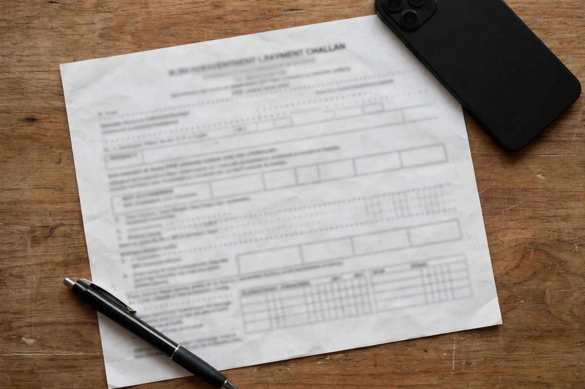

You filled the form and uploaded your documents — now the portal asks you to pay the fee. This is the step where thousands of PPSC applications quietly fail every year: candidates pay the wrong way, pay and never submit the form, or leave it until the last evening when the system is too slow to respond.
The good news: paying takes about five minutes once you understand the PSID system. This guide explains what a PSID challan is, how to pay it, and what to do after paying so your application counts.
What Is a PSID Challan?
PSID stands for Payment Slip ID. When you apply for a PPSC post online, the system generates a unique PSID challan for your application, with the exact fee printed on it. It tells the bank or wallet exactly which application the money belongs to.
Three things to know about it:
- Every application gets its own PSID. Apply for two posts and you get two PSIDs and pay two fees. Never reuse one PSID for another application.
- The fee is printed on your challan. It differs by post, so never pay a figure from a WhatsApp group — pay the figure on your own PSID.
- The PSID has a validity window. Pay it before the closing date of the advertisement, and ideally a few days early. A PSID paid after the deadline does not save a late application.
If you have not applied yet, start with our guide on how to apply for PPSC online — the PSID is generated during that process.
Step 1: Generate Your PSID from the PPSC Portal
Before you can pay anything, you need the PSID itself:
- Log in to your PPSC account on ppsc.gop.pk with your CNIC and password.
- Open your application and complete the form — on the fee step, the system generates your PSID challan. Note the PSID number and the fee amount.
- Download or print the challan if you plan to pay at a bank branch. For wallets and ATM, you only need the PSID number — but check it digit by digit first. One wrong digit can send your money to the wrong application.

Step 2: Pay via JazzCash
JazzCash is the fastest option for most candidates:
- Open the JazzCash app and go to Bill Payments or Government Payments, then select the PPSC / PSID option.
- Enter your PSID number exactly as printed, confirm the amount matches your challan, then pay. If the amount differs, stop and re-enter the PSID.
- Save the confirmation SMS and transaction ID — take a screenshot as well.
Step 3: Pay via Easypaisa
Easypaisa works the same way:
- Open the Easypaisa app, go to Bill Payments, and find the PPSC / PSID option.
- Enter your PSID number, verify the fee amount on screen, and confirm.
- Keep the receipt — screenshot it and save the SMS.
No app? An Easypaisa shop can pay it with your PSID — check the amount on their screen, take the receipt, and never share your PPSC password.
Step 4: Pay via ATM, Mobile Banking, or a Bank Branch
If you prefer your bank account, use your bank's ATM or mobile banking app. At an ATM, insert your debit card, choose Bill Payment or Government Payment, select the PPSC / PSID option, enter the PSID, confirm the amount, and keep the printed slip. In your bank's app, go to Bill Payments, find the PSID or PPSC option, enter the PSID, and confirm — then save the transaction reference. Some banks list this under "1Bill" or "PSID payment".
No smartphone, no wallet, no ATM card? Print your PSID challan and take it to a designated bank branch — the challan names the banks that accept it. Pay in cash and collect the stamped, paid challan as your receipt, and keep it safe until the recruitment process is over. Branch payment is the slowest option, so do it at least two working days before the closing date.
Step 5: Confirm Payment — Then Submit the Form
This is the step most candidates miss, and it is the whole point of this guide. Paying the fee is NOT submitting your application.
After paying, do this:
- Wait a few minutes, then log back in to your PPSC account and check that your fee status shows as paid.
- Press submit on the application form.
- Download or print the submitted application and the fee receipt, and keep both safe.
A paid-but-unsubmitted application is not counted. Candidates lose their chance this way every cycle. If the portal does not show your payment after a few hours, check with your transaction ID before paying again.
Common Problems — and How to Fix Them
Payment not showing as paid. Wallet and bank payments usually reflect within minutes, but can take a few hours. If it still does not show after 24 hours, contact PPSC through the helpline or email on its website, quoting your PSID and transaction ID.
Wrong PSID entered. Contact PPSC at once with both the PSID you paid and the correct one, plus the payment receipt. Do not pay a second time until told what to do — a duplicate payment is very hard to get back.
PSID expired or closing date passed. A PSID paid after the closing date does not revive the application — pay 3–4 days early.
5 Mistakes That Waste Your PPSC Fee
- Paying but never submitting the form. The number one mistake — paid is not submitted.
- Paying a fee someone else quoted. Pay the amount on your own PSID challan.
- Typing the PSID wrong. One wrong digit, and the money goes to the wrong place.
- Leaving it to the last day. The portal slows down — and the deadline does not move.
- Throwing away the receipt. Without the transaction ID or stamped challan, you cannot prove you paid.
Fee paid and form submitted? Your focus shifts to the test. Our PPSC preparation guide covers the paper pattern and strategy. Warm up with the mock test simulator — 100 MCQs in 90 minutes with negative marking, exactly like the real paper — and sharpen high-weight subjects with General Knowledge and English.
- Your PSID is unique to each application — pay only the amount printed on it.
- Pay via JazzCash, Easypaisa, ATM, mobile banking, or a bank branch — but check the amount on screen first.
- Paying is NOT submitting. Log back in, confirm the fee shows as paid, and press submit.
- Keep the receipt, transaction ID, or stamped challan until the recruitment process is over.
- Pay 3–4 days before the closing date.
Frequently Asked Questions
How do I pay the PPSC fee online in 2026?
Generate your PSID challan from your PPSC account, then pay it via JazzCash, Easypaisa, ATM, mobile banking, or a bank branch — and keep the receipt.
What is a PSID in PPSC?
PSID is the Payment Slip ID — a unique number for each application that tells the bank or wallet where your fee belongs. Pay against your own PSID only.
Is paying the PPSC fee the same as submitting the application?
No. After paying, log back in, confirm the fee shows as paid, and submit the form — otherwise your application is not counted.
How much is the PPSC application fee?
The fee differs from post to post and is printed on your PSID challan. Pay the amount on your own challan, not a figure from social media or a friend.
Fee paid and form submitted? Start preparing — free, no login needed
195,450+ MCQs · past papers · real exam simulator